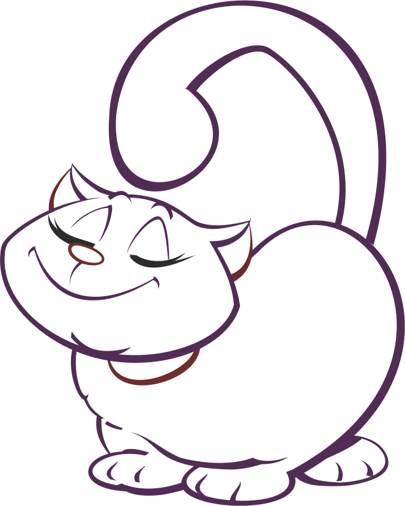

Felis silvestris catus Introducción El gato (Felis silvestris catus) es una subespecie de mamífero carnívoro de la familia Felidae. El gato convive con el ser humano al menos desde hace 9500 años. Su nombre deriva del latín catus, palabra que aludía a los gatos salvajes en contraposición a los gatos domésticos que, en latín, eran llamados felis.
Los gatos forman una única especie, pero cruzando gatos de características físicas similares se han ido creando "razas" de gatos. En 1887 se fundó en Inglaterra el National Cat Club, la primera organización que registró datos sobre gatos para establecer su pedigrí. Actualmente, la Fédération Internationale Féline (FIFe) engloba a 39 organizaciones registradoras de 37 países distintos.

Algunas razas de gatos Gato siamés El thai, o gato siamés tradicional, de cabeza redonda, tiene su origen en Tailandia. En 1871 fue exhibido por primera vez en el Crystal Palace en Londres. Durante el siglo XX, criadores norteamericanos crearon una nueva raza, de cabeza con forma alargada y triangular, llamada siamés moderno.
Gato azul ruso Se dice que el gato Azul Ruso es una raza natural que apareció en los alrededores del puerto de Arkhangelsk en el norte de Rusia (por eso también fueron conocidos como gato arcángel). Los primeros ejemplares se mostraron como los gatos de Arcángel en la exposición de gatos en 1875 en el Crystal Palace en Londres.

Gato de los bosques de Noruega Su origen exacto se desconoce, aunque ya aparecen en una clasificación de 1599 del sacerdote danés Peter Friis. La FIFe reconoció la raza en 1976, utilizando como modelo al gato Pans Truls. En 1992 apareció por primera vez un gato de esta especie de color ámbar, producto de una mutación. Basado en datos de Wikipedia Última modificación: 31 de mayo de 2018